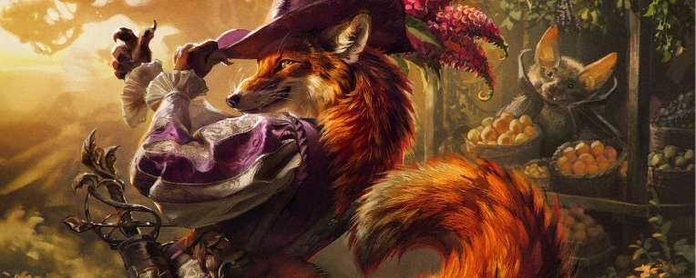
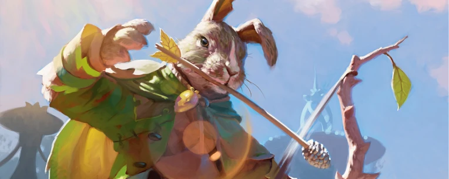
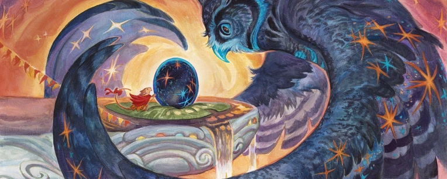
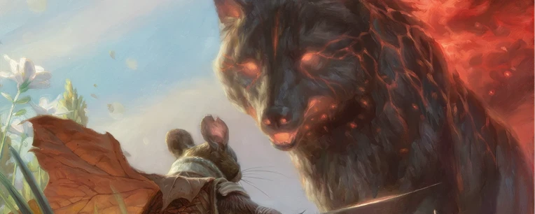

Bloomburrow
Universo Magic: Bloomburrow
Un'avventura indimenticabile tra minuscole creature e la magia selvaggia della Valle ti aspetta. In questa espansione, l'universo di Magic: The Gathering ci porta in un mondo idilliaco e fiabesco dove non esistono umani. Le carte di questo set ti permetteranno di vivere un'epica lotta per la sopravvivenza al fianco di coraggiosi topi, rane sagge, pipistrelli e scoiattoli, portando sul tavolo da gioco personaggi affascinanti, luoghi incantati e tematiche indissolubilmente legate alla forza della natura e al coraggio dei più piccoli.
Varianti Speciali
Per celebrare l'estetica fiabesca dell'espansione, il trattamento speciale Vetrina Boscosa (Woodland) trasforma le carte in meravigliose illustrazioni che sembrano uscite da un classico libro di favole. Il vero tesoro del set sono però le carte Anime con Foil in Rilievo (Raised Foil): una rarissima variante con un'esclusiva finitura tridimensionale e dorata che esalta i protagonisti della Valle. Trovare una di queste carte esclusive è un'impresa rara, rendendole i pezzi più ambiti dell'intera collezione.

Perché sbustare Bloomburrow?
Questa espansione è imperdibile per tre motivi principali:
- Un mondo in miniatura: Ti permette di vivere un'avventura con una prospettiva unica, esplorando le meraviglie e i colossali pericoli della Valle attraverso gli occhi dei suoi piccoli abitanti.
- Atmosfera Unica: Sostituisce i classici tropi fantasy con un'estetica ispirata alla letteratura con animali antropomorfi, portando una ventata d'aria fresca ideale sia per i fan storici in cerca di novità, sia per i nuovi giocatori attratti da uno stile artistico incantevole.
- Nuove Sinergie: Offre carte potenti e affascinanti focalizzate su dieci tipologie di animali (come Topi, Conigli, Rane e Procioni) e introduce nuove e divertenti dinamiche di gioco come Prole (Offspring) e Dono (Gift).

Fazioni e Personaggi Principali
L'espansione "Bloomburrow" varia enormemente le possibilità di costruzione dei mazzi, permettendo di giocare strategie legate alle diverse specie animali della Valle. Ecco alcuni dei concetti tematici principali:
I Coraggiosi Topi e Conigli: Mazzi focalizzati sulla rapidità, l'equipaggiamento e la creazione di un vasto esercito di pedine, guidati da impavidi eroi pronti a tutto per difendere la propria casa.

I Mistici Pipistrelli e Gufi: Strategie basate sul volo, l'elusione e il controllo del campo, sfruttando la saggezza dei cieli e magie insidiose per dettare il ritmo della partita.

Le Bestie della Calamità: Mazzi distruttivi che schierano le terrificanti e gigantesche minacce elementali della Valle (come l'Orso, il Lupo o il Falco) per dominare gli avversari attraverso la pura e inarrestabile forza della natura.

Pronto per il viaggio?
L'espansione Bloomburrow dimostra come l'Universo di Magic possa sempre sorprendere con mondi vibranti e originali, regalando sfide sempre fresche e ricche di strategia. Che tu sia un veterano o un nuovo giocatore pronto a muovere i primi passi in questo piano incantato, questo set saprà conquistarti. Raduna la tua zampettante compagnia, studia le nuove carte e unisciti all'avventura più tenera ed epica dell'anno!